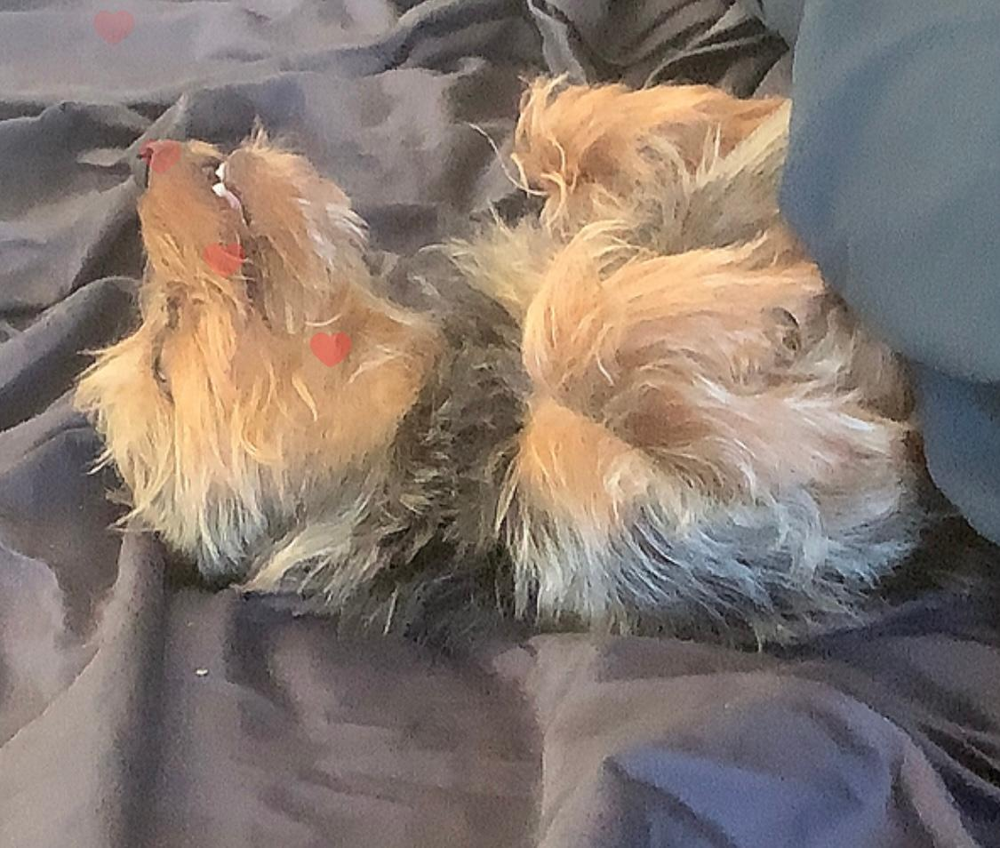

Hello! I am here to create my first website.
Here is a poem about a dog to celebrate my dog.

"Now dogs pretend they like to fight;
They often bark, more seldom bite;
But yet a Dog is, on the whole,
What you would call a simple soul.
Of course I'm not including Pekes,
And such fantastic canine freaks.
The usual Dog about the Town
Is much inclined to play the clown
And far from showing too much pride
Is frequently undignified.
He's very easily taken in-
Just chuck him underneath the chin
Or slap his back or shake his paw,
And he will gambol and guffaw.
He's such an easy-going lout,
He'll answer any hail or shout.
Again I must remind you that
A Dog's a Dog - A CAT'S A CAT."
T.S. Elliot